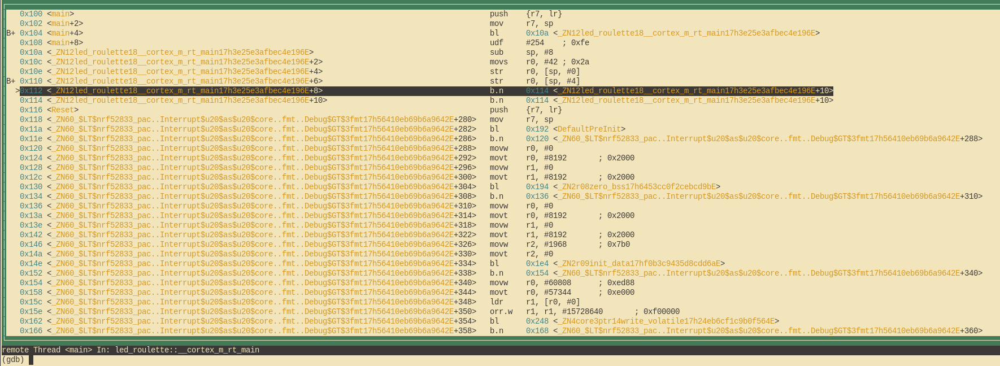

Depurando
Como isso funciona?
Antes de depurar nosso pequeno programa, vamos dedicar um momento para entender rapidamente o que realmente está acontecendo aqui. No capítulo anterior, já discutimos o propósito do segundo chip na placa e também como ele se comunica com o nosso computador, mas como podemos realmente usá-lo?
A pequena opção default.gdb.enabled = true no arquivo Embed.toml fez com que
o cargo-embed abrisse um chamado "GDB stub" após o flashing, que é um servidor
ao qual nosso GDB pode se conectar e enviar comandos como "definir um breakpoint
no endereço X". O servidor pode então decidir por conta própria como lidar com
esse comando. No caso do cargo-embed GDB stub, ele encaminhará o comando para
a sonda de depuração na placa via USB, que por sua vez faz o trabalho de
realmente se comunicar com a MCU para nós.
Vamos depurar!
Como o cargo-embed está bloqueando nosso shell atual, podemos simplesmente
abrir um novo e voltar ao diretório do nosso projeto. Uma vez lá, primeiro temos
que abrir o binário no gdb assim:
# Para micro:bit v2
$ gdb target/thumbv7em-none-eabihf/debug/led-roulette
# Para micro:bit v1
$ gdb target/thumbv6m-none-eabi/debug/led-roulette
NOTA: Dependendo de qual GDB você instalou, você terá que usar um comando diferente para iniciá-lo. Verifique o Capítulo 3 se você esqueceu qual era.
NOTA: Se você estiver recebendo o erro
target/thumbv7em-none-eabihf/debug/led-roulette: No such file or directory, tente adicionar../../ao caminho do arquivo, por exemplo:$ gdb ../../target/thumbv7em-none-eabihf/debug/led-rouletteIsso ocorre porque cada projeto de exemplo está em um
workspaceque contém todo o livro, e os workspaces possuem um único diretório dedestino. Confira o capítulo de Workspaces no Livro de Rust para mais informações.
NOTA: Se o
cargo-embedimprimir muitos avisos aqui, não se preocupe com isso. Até o momento, ele não implementa totalmente o protocolo GDB e, portanto, pode não reconhecer todos os comandos que seu GDB está enviando para ele. Contanto que não ocorra uma falha, está tudo bem.
Em seguida, teremos que nos conectar ao GDB stub. Ele é executado em
localhost:1337 por padrão, portanto, para se conectar a ele, execute o
seguinte comando:
(gdb) target remote :1337
Remote debugging using :1337
0x00000116 in nrf52833_pac::{{impl}}::fmt (self=0xd472e165, f=0x3c195ff7) at /home/nix/.cargo/registry/src/github.com-1ecc6299db9ec823/nrf52833-pac-0.9.0/src/lib.rs:157
157 #[derive(Copy, Clone, Debug)]
A seguir, o que queremos fazer é chegar à função principal do nosso programa. Faremos isso primeiro configurando um breakpoint lá e continuando a execução do programa até atingirmos ele:
(gdb) break main
Breakpoint 1 at 0x104: file src/05-led-roulette/src/main.rs, line 9.
Note: automatically using hardware breakpoints for read-only addresses.
(gdb) continue
Continuing.
Breakpoint 1, led_roulette::__cortex_m_rt_main_trampoline () at src/05-led-roulette/src/main.rs:9
9 #[entry]
Breakpoints podem ser usados para interromper o fluxo normal de um programa. O
comando continue permitirá que o programa seja executado livremente até que
ele atinja um breakpoint. Nesse caso, ele continuará a execução até chegar à
função main, pois há um breakpoint lá.
Observe que a saída do GDB diz "Breakpoint 1". Lembre-se de que nosso
processador só pode usar uma quantidade limitada desses breakpoints, então é uma
boa ideia prestar atenção nessas mensagens. Se você acabar ficando sem
breakpoints, pode listar todos os atuais com o comando info break e excluir os
desejados com delete <número-do-breakpoint>.
Para uma experiência de depuração mais agradável, estaremos usando a Interface de Texto do Usuário (TUI) do GDB. Para entrar neste modo, no shell do GDB, digite o seguinte comando:
(gdb) layout src
NOTA: Pedimos desculpas aos usuários do Windows. O GDB fornecido com a GNU ARM Embedded Toolchain não suporta o modo TUI
:(.

O comando "break" do GDB não funciona apenas para nomes de funções, ele também pode interromper em determinados números de linha. Se quisermos interromper na linha 13, podemos simplesmente fazer o seguinte:
(gdb) break 13
Breakpoint 2 at 0x110: file src/05-led-roulette/src/main.rs, line 13.
(gdb) continue
Continuing.
Breakpoint 2, led_roulette::__cortex_m_rt_main () at src/05-led-roulette/src/main.rs:13
(gdb)
A qualquer momento, você pode sair do modo TUI usando o seguinte comando:
(gdb) tui disable
Agora estamos "na" instrução _y = x; essa instrução ainda não foi executada.
Isso significa que x está inicializado, mas _y não está. Vamos inspecionar
essas variáveis da pilha/locais usando o comando print:
(gdb) print x
$1 = 42
(gdb) print &x
$2 = (*mut i32) 0x20003fe8
(gdb)
Conforme esperado, x contém o valor 42. O comando print &x imprime o
endereço da variável x. A parte interessante aqui é que a saída do GDB mostra
o tipo da referência: i32*, um ponteiro para um valor i32.
Se quisermos continuar a execução do programa linha por linha, podemos fazer
isso usando o comando next, então vamos prosseguir para a instrução loop {}:
(gdb) next
16 loop {}
E _y agora deve estar inicializado.
(gdb) print _y
$5 = 42
Em vez de imprimir as variáveis locais uma por uma, você também pode usar o
comando info locals:
(gdb) info locals
x = 42
_y = 42
(gdb)
Se usarmos next novamente em cima da instrução loop {}, ficaremos presos,
pois o programa nunca passará por essa instrução. Em vez disso, vamos mudar para
a visualização de desmontagem com o comando layout asm e avançar uma instrução
de cada vez usando stepi. Você sempre pode voltar para a visualização do
código-fonte em Rust posteriormente emitindo o comando layout src novamente.
NOTA: Se você usou o comando
nextoucontinuepor engano e o GDB ficou preso, você pode desbloqueá-lo pressionandoCtrl+C.
(gdb) layout asm

Se você não estiver usando o modo TUI, pode usar o comando disassemble /m para
desmontar o programa em torno da linha em que você está atualmente.
(gdb) disassemble /m
Dump of assembler code for function _ZN12led_roulette18__cortex_m_rt_main17h3e25e3afbec4e196E:
10 fn main() -> ! {
0x0000010a <+0>: sub sp, #8
0x0000010c <+2>: movs r0, #42 ; 0x2a
11 let _y;
12 let x = 42;
0x0000010e <+4>: str r0, [sp, #0]
13 _y = x;
0x00000110 <+6>: str r0, [sp, #4]
14
15 // infinite loop; just so we don't leave this stack frame
16 loop {}
=> 0x00000112 <+8>: b.n 0x114 <_ZN12led_roulette18__cortex_m_rt_main17h3e25e3afbec4e196E+10>
0x00000114 <+10>: b.n 0x114 <_ZN12led_roulette18__cortex_m_rt_main17h3e25e3afbec4e196E+10>
End of assembler dump.
Vê a seta gorda => no lado esquerdo? Ela mostra a instrução que o processador
executará em seguida.
Se você não estiver no modo TUI, em cada comando stepi, o GDB imprimirá a
declaração e o número da linha da instrução que o processador executará em
seguida.
(gdb) stepi
16 loop {}
(gdb) stepi
16 loop {}
Um último truque antes de passarmos para algo mais interessante. Digite os seguintes comandos no GDB:
(gdb) monitor reset
(gdb) c
Continuing.
Breakpoint 1, led_roulette::__cortex_m_rt_main_trampoline () at src/05-led-roulette/src/main.rs:9
9 #[entry]
(gdb)
Agora estamos de volta ao início de main!
monitor reset irá reiniciar o microcontrolador e pará-lo exatamente no ponto
de entrada do programa. O comando continue seguinte permitirá que o programa
seja executado livremente até chegar à função main, que possui um breakpoint.
Essa combinação é útil quando você, por engano, pulou uma parte do programa que estava interessado em inspecionar. Você pode facilmente reverter o estado do seu programa de volta ao seu início.
Detalhe: O comando
resetnão limpa ou altera a RAM. Essa memória reterá seus valores da execução anterior. Isso não deve ser um problema, a menos que o comportamento do seu programa dependa do valor de variáveis não inicializadas, mas essa é a definição de Comportamento Indefinido (Undefined Behavior - UB).
Concluímos esta sessão de depuração. Você pode encerrá-la com o comando quit.
(gdb) quit
A debugging session is active.
Inferior 1 [Remote target] will be detached.
Quit anyway? (y or n) y
Detaching from program: $PWD/target/thumbv7em-none-eabihf/debug/led-roulette, Remote target
Ending remote debugging.
[Inferior 1 (Remote target) detached]
NOTA: Se a CLI padrão do GDB não for do seu agrado, confira o gdb-dashboard. Ele usa Python para transformar a interface padrão do GDB em um painel que mostra os registros, a visualização do código-fonte, a visualização em assembly e outras coisas.
Se você deseja aprender mais sobre o que o GDB pode fazer, confira a seção Como usar o GDB.
O que vem a seguir? A API de alto nível que eu prometi.